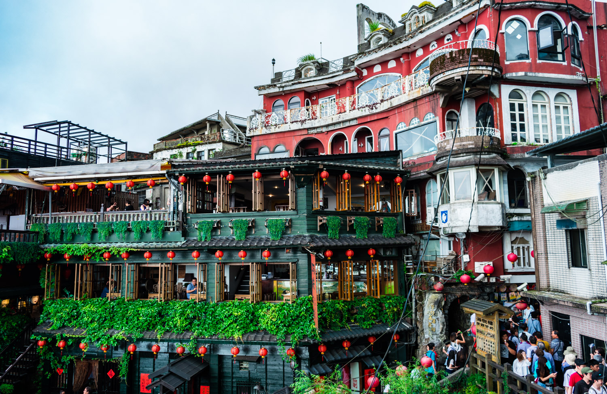
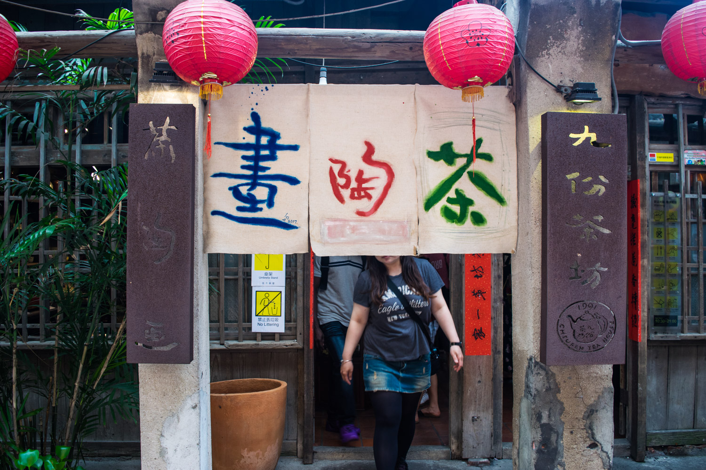
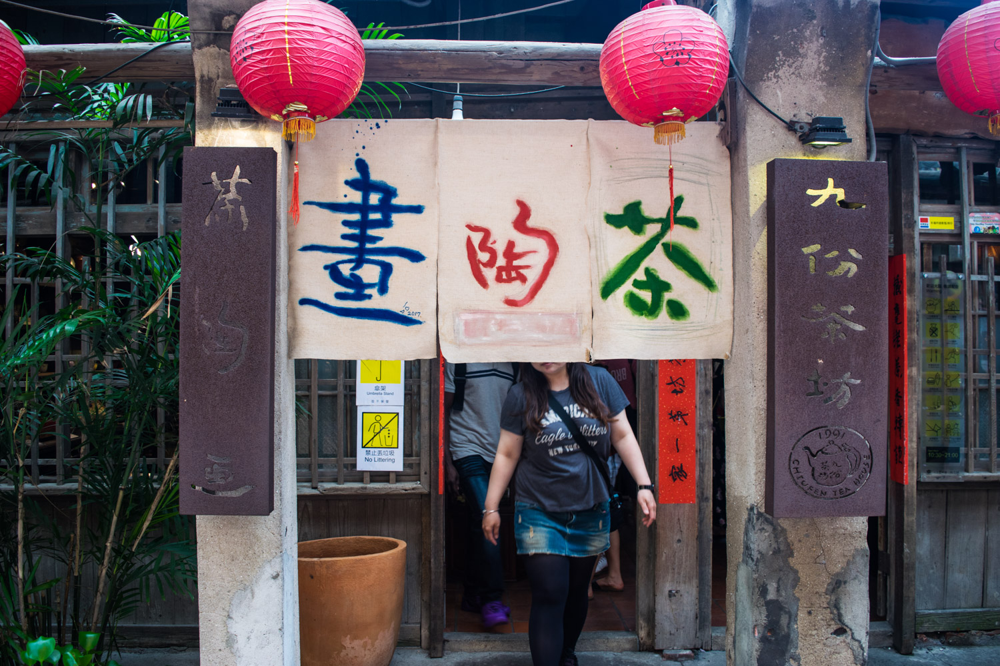

台灣｜Taiwan
九份 Jiufen
九份隸屬新北市瑞芳區，西元1890年左右，居民在福山宮土地祠距小金瓜不遠處掘到金脈...



九份隸屬新北市瑞芳區，西元1890年左右，居民在福山宮土地祠距小金瓜不遠處掘到金脈，這使得原本只有九戶人家的貧窮村落，頓時聚集了三、四千戶的淘金人口，當時由海上遙望九份聚落，燈火燦爛，時人稱之為「小上海」、「小香港」。

九份也時常被認為是電影《千尋》的靈感來源，儘管宮崎駿本人否認這個說法，眾人還是慕名而來，尤其是阿妹茶樓的建築風格，搭配火紅的燈龍、峭壁上的屋瓦，讓遊客彷彿來到電影場景裡。
九份的特色美食，無疑問是芋圓！ 搭配這樣的美景享受Q彈的芋圓是不是讓你也口水直流～
九份的特色美食，無疑問是芋圓！ 搭配這樣的美景享受Q彈的芋圓是不是讓你也口水直流～
傍晚的九份搖身一變，橘紅的夕陽映照在九份的山海上，看著這赴美景格外享受，但轉眼之間，天空又變成紫色，也別有一番風味～
晚上的九份遊客不減，叫賣聲喧嘩的老街、燈火通明的茶樓，讓整座山氣氛都熱鬧了起來！